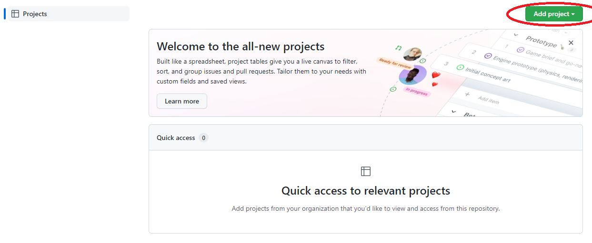
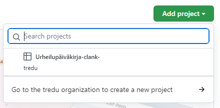
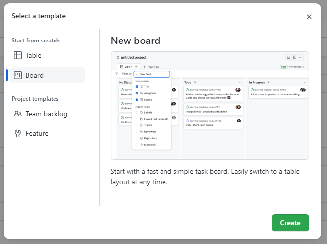
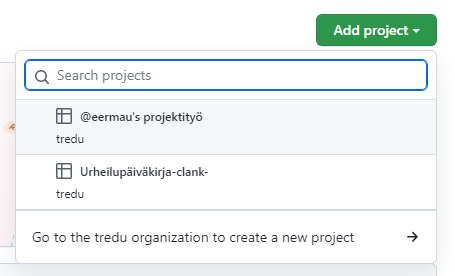

Github-projektiseinä
Lisää repoon projektiseinä
- Backlog - mieti tänne tehtävät joita projekti sinulta vaatii, tämä täydentyy 1.-2. jaksojen aikana
- In progress: raahaa tänne se tehtävä / tehtävät joita olet nyt aktiivisesti tekemässä
- Done
Nyt classic-projectin linkittäminen ei enää onnistu joten käytä uutta projektiseinää.
- 
Lisää uusi projekti.
- 
Siirry Tredu-organisaation sivulle luomaan uusi projekti (Go to tredu organization to create a new project).
- 
Valitse Board-näkymä.
- 
Palaa alkuperäisen repon projektiseinälle ja valitse lisäämäsi projekti, se on nyt linkitetty repoon.